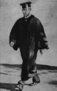
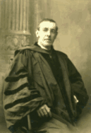
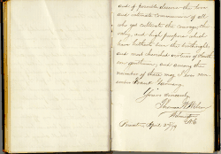

| Woodrow Wilson was the keynote speaker at Princeton University’s Sesquicentennial Celebration in 1896 where he reviewed the University’s 150-year history and the contributions of its faculty and alumni in his famous "Princeton in the Nation’s Service" address. At the time, Wilson was a professor of history, politics and jurisprudence, and a noted national speaker. To read the address, click the image of Wilson to the right of this text. |  |
|  | Six years later, upon his inauguration as president of the university, he delivered "Princeton for the Nation’s Service" which discussed the role of the university in public affairs. To read the address, click the image of Wilson to the left of this text. |
| Wilson’s lofty writing style was already evident twenty years earlier when he was a Princeton student, as reflected in his inscription in a classmate’s autograph book. To read the inscription, click the miniature reproduction of the autograph book page at right. |  |